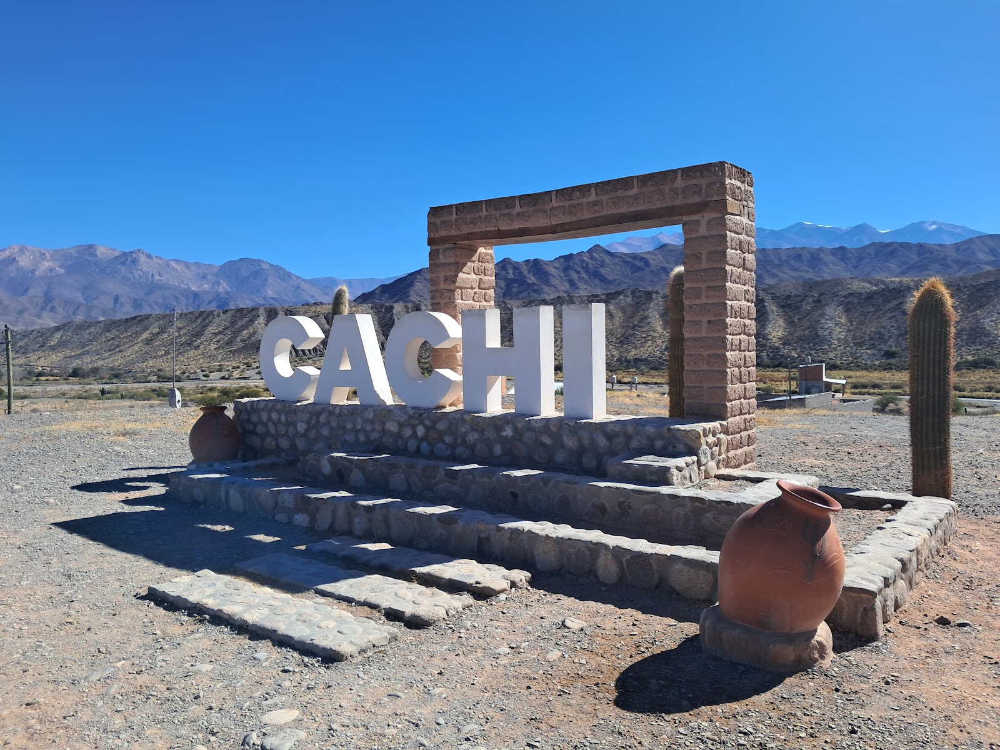
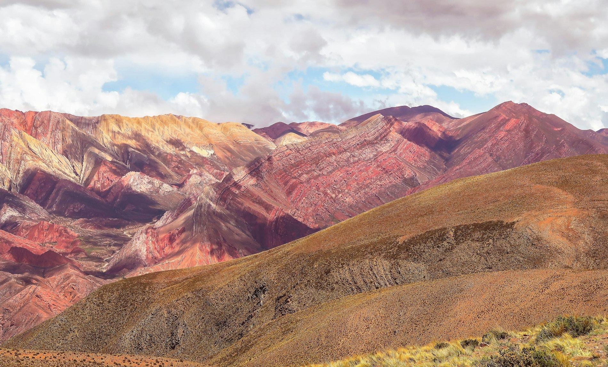
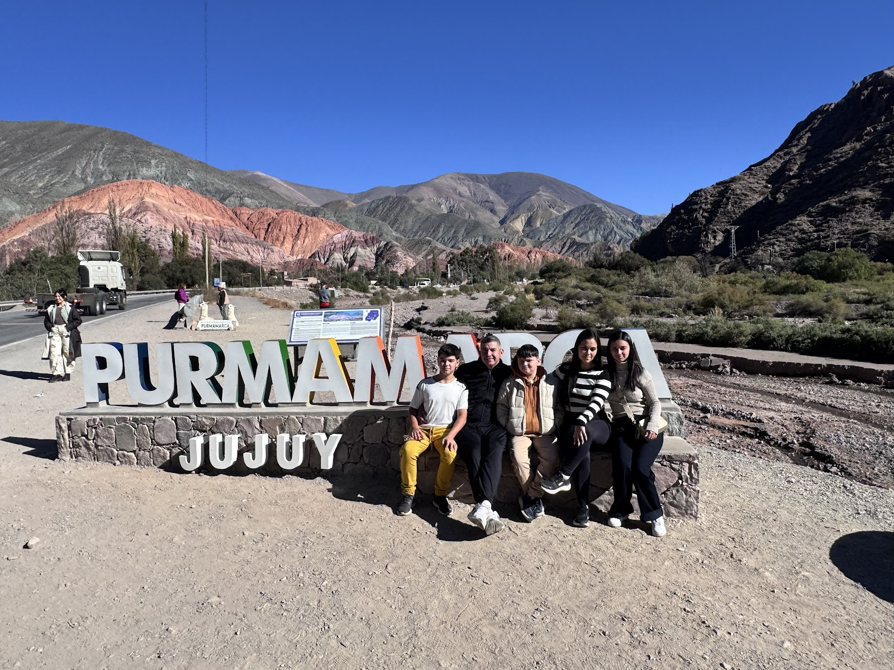
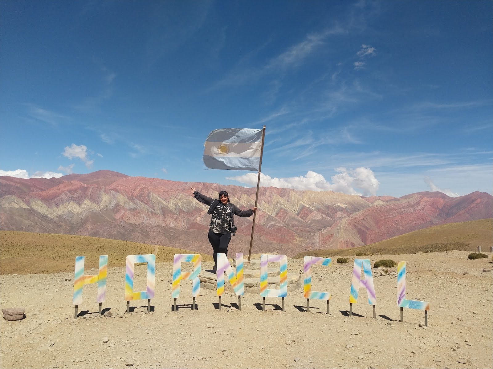

Valles Calchaquíes
Cafayate
y Cachi
Las bodegas de Cafayate y el pueblo de Cachi, con su arco de adobe y los cardones del camino.


Salta capital · excursiones al norte
Excursiones por Salta y Jujuy con coordinadores propios y choferes que hacen de guía. Atienden de lunes a sábado de 11 a 22, por teléfono y por WhatsApp al mismo número.
4,882 reseñas en Google
Cada uno de estos destinos aparece nombrado por los pasajeros en sus reseñas de Google. No hay lista de precios acá: se consulta por teléfono o WhatsApp y te dicen qué entra en los días que tenés.
Valles Calchaquíes
Las bodegas de Cafayate y el pueblo de Cachi, con su arco de adobe y los cardones del camino.

Quebrada de Humahuaca, Jujuy
La quebrada completa, tal como la enumera una reseña de ocho días de recorrido, con Maimará en el camino.

Serranía del Hornocal
El cerro de catorce colores y el pueblo colgado del cerro. Sobre Iruya escribió Sonia Foglia: paisajes increíbles y todo explicado.

Atienden hasta las 22
El mismo número atiende el teléfono y el WhatsApp. Lunes a sábado, de 11 a 22.
Escribir por WhatsAppLos choferes unos guias super preparados para brindar una info inigualable de cada lugar recorrido cada ladera, cada quebrada, valle y yunga.
Viajamos a Iruya con Hugo. Muy linda la excursión, unos paisajes increíbles. Hugo muy bien, nos explicó todo, nos tuvo paciencia y fue super claro.
Los encontré por una publicación en instagram, consulte, me sacaron todas las dudas… Cuando llega la fecha, un día antes se comunican y coordinan horarios. Completamente recomendables.
Contás qué días tenés en Salta y qué querés ver del norte.
Te dicen qué excursión entra en esos días y qué queda por confirmar.
El día antes se comunican para arreglar hora y punto de encuentro.
Un coordinador de la agencia acompaña la excursión.